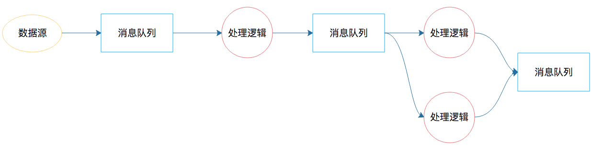
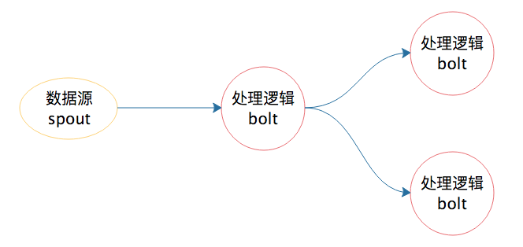
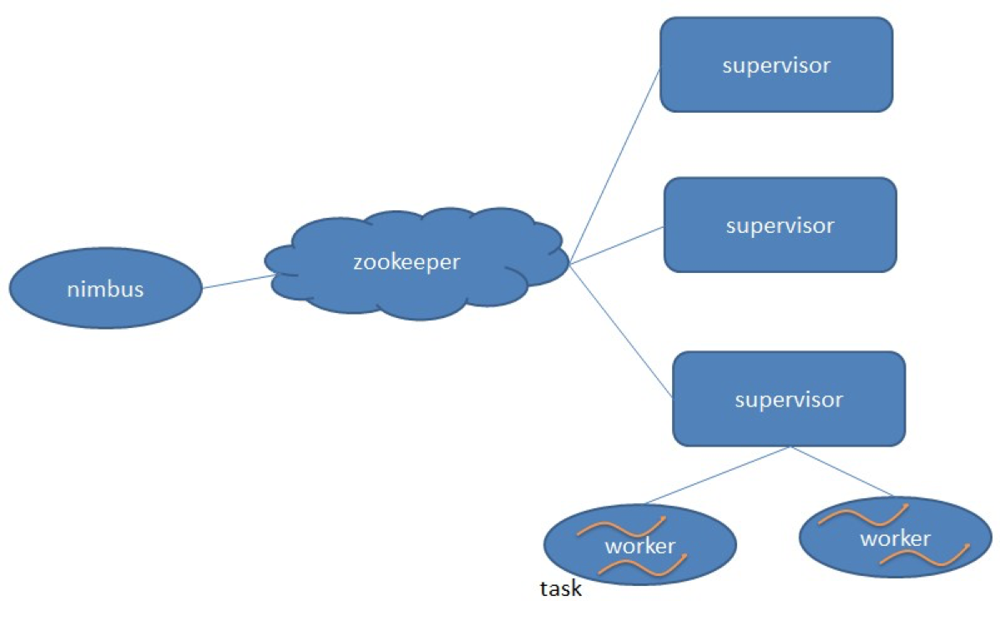
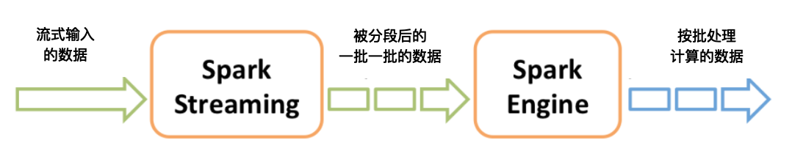
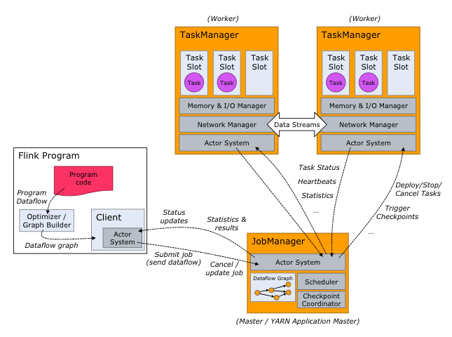

- 00 开篇词 为什么说每个软件工程师都应该懂大数据技术？.md.html
- 01 大数据技术发展史：大数据的前世今生.md.html
- 02 大数据应用发展史：从搜索引擎到人工智能.md.html
- 03 大数据应用领域：数据驱动一切.md.html
- 04 移动计算比移动数据更划算.md.html
- 05 从RAID看垂直伸缩到水平伸缩的演化.md.html
- 06 新技术层出不穷，HDFS依然是存储的王者.md.html
- 07 为什么说MapReduce既是编程模型又是计算框架？.md.html
- 08 MapReduce如何让数据完成一次旅行？.md.html
- 09 为什么我们管Yarn叫作资源调度框架？.md.html
- 10 模块答疑：我们能从Hadoop学到什么？.md.html
- 11 Hive是如何让MapReduce实现SQL操作的？.md.html
- 12 我们并没有觉得MapReduce速度慢，直到Spark出现.md.html
- 13 同样的本质，为何Spark可以更高效？.md.html
- 14 BigTable的开源实现：HBase.md.html
- 15 流式计算的代表：Storm、Flink、Spark Streaming.md.html
- 16 ZooKeeper是如何保证数据一致性的？.md.html
- 17 模块答疑：这么多技术，到底都能用在什么场景里？.md.html
- 18 如何自己开发一个大数据SQL引擎？.md.html
- 19 Spark的性能优化案例分析（上）.md.html
- 20 Spark的性能优化案例分析（下）.md.html
- 21 从阿里内部产品看海量数据处理系统的设计（上）：Doris的立项.md.html
- 22 从阿里内部产品看海量数据处理系统的设计（下）：架构与创新.md.html
- 23 大数据基准测试可以带来什么好处？.md.html
- 24 从大数据性能测试工具Dew看如何快速开发大数据系统.md.html
- 25 模块答疑：我能从大厂的大数据开发实践中学到什么？.md.html
- 26 互联网产品 + 大数据产品 = 大数据平台.md.html
- 27 大数据从哪里来？.md.html
- 28 知名大厂如何搭建大数据平台？.md.html
- 29 盘点可供中小企业参考的商业大数据平台.md.html
- 30 当大数据遇上物联网.md.html
- 31 模块答疑：为什么大数据平台至关重要？.md.html
- 32 互联网运营数据指标与可视化监控.md.html
- 33 一个电商网站订单下降的数据分析案例.md.html
- 34 A_B测试与灰度发布必知必会.md.html
- 35 如何利用大数据成为“增长黑客”？.md.html
- 36 模块答疑：为什么说数据驱动运营？.md.html
- 37 如何对数据进行分类和预测？.md.html
- 38 如何发掘数据之间的关系？.md.html
- 39 如何预测用户的喜好？.md.html
- 40 机器学习的数学原理是什么？.md.html
- 41 从感知机到神经网络算法.md.html
- 42 模块答疑：软件工程师如何进入人工智能领域？.md.html
- 所有的不确定都是机会——智慧写给你的新年寄语.md.html
- 第2季回归丨大数据之后，让我们回归后端.md.html
- 结束语 未来的你，有无限可能.md.html
- 捐赠
15 流式计算的代表：Storm、Flink、Spark Streaming
我前面介绍的大数据技术主要是处理、计算存储介质上的大规模数据，这类计算也叫大数据批处理计算。顾名思义，数据是以批为单位进行计算，比如一天的访问日志、历史上所有的订单数据等。这些数据通常通过HDFS存储在磁盘上，使用MapReduce或者Spark这样的批处理大数据计算框架进行计算，一般完成一次计算需要花费几分钟到几小时的时间。
此外，还有一种大数据技术，针对实时产生的大规模数据进行即时计算处理，我们比较熟悉的有摄像头采集的实时视频数据、淘宝实时产生的订单数据等。像上海这样的一线城市，公共场所的摄像头规模在数百万级，即使只有重要场所的视频数据需要即时处理，可能也会涉及几十万个摄像头，如果想实时发现视频中出现的通缉犯或者违章车辆，就需要对这些摄像头产生的数据进行实时处理。实时处理最大的不同就是这类数据跟存储在HDFS上的数据不同，是实时传输过来的，或者形象地说是流过来的，所以针对这类大数据的实时处理系统也叫大数据流计算系统。
目前业内比较知名的大数据流计算框架有Storm、Spark Streaming、Flink，接下来，我们逐一看看它们的架构原理与使用方法。
Storm
其实大数据实时处理的需求早已有之，最早的时候，我们用消息队列实现大数据实时处理，如果处理起来比较复杂，那么就需要很多个消息队列，将实现不同业务逻辑的生产者和消费者串起来。这个处理过程类似下面图里的样子。

图中的消息队列负责完成数据的流转；处理逻辑既是消费者也是生产者，也就是既消费前面消息队列的数据，也为下个消息队列产生数据。这样的系统只能是根据不同需求开发出来，并且每次新的需求都需要重新开发类似的系统。因为不同应用的生产者、消费者的处理逻辑不同，所以处理流程也不同，因此这个系统也就无法复用。
之后我们很自然地就会想到，能不能开发一个流处理计算系统，我们只要定义好处理流程和每一个节点的处理逻辑，代码部署到流处理系统后，就能按照预定义的处理流程和处理逻辑执行呢？Storm就是在这种背景下产生的，它也算是一个比较早期的大数据流计算框架。上面的例子如果用Storm来实现，过程就变得简单一些了。

有了Storm后，开发者无需再关注数据的流转、消息的处理和消费，只要编程开发好数据处理的逻辑bolt和数据源的逻辑spout，以及它们之间的拓扑逻辑关系toplogy，提交到Storm上运行就可以了。
在了解了Storm的运行机制后，我们来看一下它的架构。Storm跟Hadoop一样，也是主从架构。

nimbus是集群的Master，负责集群管理、任务分配等。supervisor是Slave，是真正完成计算的地方，每个supervisor启动多个worker进程，每个worker上运行多个task，而task就是spout或者bolt。supervisor和nimbus通过ZooKeeper完成任务分配、心跳检测等操作。
Hadoop、Storm的设计理念，其实是一样的，就是把和具体业务逻辑无关的东西抽离出来，形成一个框架，比如大数据的分片处理、数据的流转、任务的部署与执行等，开发者只需要按照框架的约束，开发业务逻辑代码，提交给框架执行就可以了。
而这也正是所有框架的开发理念，就是将业务逻辑和处理过程分离开来，使开发者只需关注业务开发即可，比如Java开发者都很熟悉的Tomcat、Spring等框架，全部都是基于这种理念开发出来的。
Spark Streaming
我们知道Spark是一个批处理大数据计算引擎，主要针对大批量历史数据进行计算。前面我在讲Spark架构原理时介绍过，Spark是一个快速计算的大数据引擎，它将原始数据分片后装载到集群中计算，对于数据量不是很大、过程不是很复杂的计算，可以在秒级甚至毫秒级完成处理。
Spark Streaming巧妙地利用了Spark的分片和快速计算的特性，将实时传输进来的数据按照时间进行分段，把一段时间传输进来的数据合并在一起，当作一批数据，再去交给Spark去处理。下图这张图描述了Spark Streaming将数据分段、分批的过程。

如果时间段分得足够小，每一段的数据量就会比较小，再加上Spark引擎的处理速度又足够快，这样看起来好像数据是被实时处理的一样，这就是Spark Streaming实时流计算的奥妙。
这里要注意的是，在初始化Spark Streaming实例的时候，需要指定分段的时间间隔。下面代码示例中间隔是1秒。
val ssc = new StreamingContext(conf, Seconds(1))
当然你也可以指定更小的时间间隔，比如500ms，这样处理的速度就会更快。时间间隔的设定通常要考虑业务场景，比如你希望统计每分钟高速公路的车流量，那么时间间隔可以设为1分钟。
Spark Streaming主要负责将流数据转换成小的批数据，剩下的就可以交给Spark去做了。
Flink
前面说Spark Streaming是将实时数据流按时间分段后，当作小的批处理数据去计算。那么Flink则相反，一开始就是按照流处理计算去设计的。当把从文件系统（HDFS）中读入的数据也当做数据流看待，他就变成批处理系统了。
为什么Flink既可以流处理又可以批处理呢？
如果要进行流计算，Flink会初始化一个流执行环境StreamExecutionEnvironment，然后利用这个执行环境构建数据流DataStream。
StreamExecutionEnvironment see = StreamExecutionEnvironment.getExecutionEnvironment();
DataStream<WikipediaEditEvent> edits = see.addSource(new WikipediaEditsSource());
如果要进行批处理计算，Flink会初始化一个批处理执行环境ExecutionEnvironment，然后利用这个环境构建数据集DataSet。
ExecutionEnvironment env = ExecutionEnvironment.getExecutionEnvironment();
DataSet<String> text = env.readTextFile("/path/to/file");
然后在DataStream或者DataSet上执行各种数据转换操作（transformation），这点很像Spark。不管是流处理还是批处理，Flink运行时的执行引擎是相同的，只是数据源不同而已。
Flink处理实时数据流的方式跟Spark Streaming也很相似，也是将流数据分段后，一小批一小批地处理。流处理算是Flink里的“一等公民”，Flink对流处理的支持也更加完善，它可以对数据流执行window操作，将数据流切分到一个一个的window里，进而进行计算。
在数据流上执行
.timeWindow(Time.seconds(10))
可以将数据切分到一个10秒的时间窗口，进一步对这个窗口里的一批数据进行统计汇总。
Flink的架构和Hadoop 1或者Yarn看起来也很像，JobManager是Flink集群的管理者，Flink程序提交给JobManager后，JobManager检查集群中所有TaskManager的资源利用状况，如果有空闲TaskSlot（任务槽），就将计算任务分配给它执行。

小结
大数据技术最开始出现的时候，仅仅针对批处理计算，也就是离线计算。相对说来，大数据实时计算可以复用互联网实时在线业务的处理技术方案，毕竟对于Google而言，每天几十亿的用户搜索访问请求也是大数据，而互联网应用处理实时高并发请求已经有一套完整的解决方案了（详见我写的《大型网站技术架构：核心原理与案例分析》一书），大数据流计算的需求当时并不强烈。
但是我们纵观计算机软件发展史，发现这部历史堪称一部技术和业务不断分离的历史。人们不断将业务逻辑从技术实现上分离出来，各种技术和架构方案的出现，也基本都是为这一目标服务。
最早的时候我们用机器语言和汇编语言编程，直接将业务逻辑用CPU指令实现，计算机软件就是CPU指令的集合，此时技术和业务完全耦合，软件编程就是面向机器编程，用机器指令完成业务逻辑，当时我们在编程的时候思维方式是面向机器的，需要熟记机器指令。
后来我们有了操作系统和高级编程语言，将软件和CPU指令分离开来，我们使用Pascal、Cobal这样的高级编程语言进行编程，并将程序运行在操作系统上。这时我们不再面向机器编程，而是面向业务逻辑和过程编程，这是业务逻辑与计算机技术的一次重要分离。
再后来出现了面向对象的编程语言，这是人类编程史上的里程碑。我们编程的时候关注的重心，从机器、业务过程转移到业务对象本身，分析客观世界业务对象的关系和协作是怎样的，如何通过编程映射到软件上，这是编程思维的一次革命，业务和技术实现从思想上分离了。
再后来出现各种编程框架，一方面使业务和技术分离得更加彻底，想象一下，如果不用这些框架，你自己编程监听80通信端口，从获取HTTP二进制流开始，到开发一个Web应用会是什么感觉。另一方面，这些框架也把复杂的业务流程本身解耦合，视图、业务、服务、存储各个层次模块独立开发、部署，通过框架整合成一个系统。
回到流计算，固然我们可以用各种分布式技术实现大规模数据的实时流处理，但是我们更希望只要针对小数据量进行业务开发，然后丢到一个大规模服务器集群上，就可以对大规模实时数据进行流计算处理。也就是业务实现和大数据流处理技术分离，业务不需要关注技术，于是各种大数据流计算技术应运而生。
其实，我们再看看互联网应用开发，也是逐渐向业务和技术分离的方向发展。比如，云计算以云服务的方式将各种分布式解决方案提供给开发者，使开发者无需关注分布式基础设施的部署和维护。目前比较热门的微服务、容器、服务编排、Serverless等技术方案，它们则更进一步，使开发者只关注业务开发，将业务流程、资源调度和服务管理等技术方案分离开来。而物联网领域时髦的FaaS，意思是函数即服务，就是开发者只要开发好函数，提交后就可以自动部署到整个物联网集群运行起来。
总之，流计算就是将大规模实时计算的资源管理和数据流转都统一管理起来，开发者只要开发针对小数据量的数据处理逻辑，然后部署到流计算平台上，就可以对大规模数据进行流式计算了。
思考题
流计算架构方案也逐渐对互联网在线业务开发产生影响，目前流行的微服务架构虽然将业务逻辑拆分得很细，但是服务之间的调用还是依赖接口，这依然是一种比较强的耦合关系。淘宝等互联网企业已经在尝试一种类似流计算的、异步的、基于消息的服务调用与依赖架构，据说淘宝的部分核心业务功能已经使用这种架构方案进行系统重构，并应用到今年的“双十一”大促，利用这种架构特有的回压设计对高并发系统进行自动限流与降级，取得很好的效果。
我也邀请了淘宝负责这次架构重构的高级技术专家李鼎，请他在留言区分享一下这次架构重构的心得体会。
你对这种架构方案有什么想法，是否认为这样的架构方案代表了未来的互联网应用开发的方向？
欢迎你写下自己的思考或疑问，与我和其他同学一起讨论。
© 2019 - 2023 Liangliang Lee. Powered by gin and hexo-theme-book.